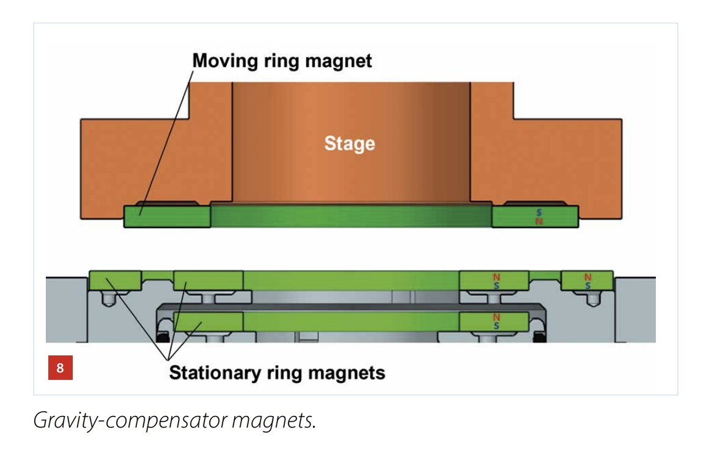
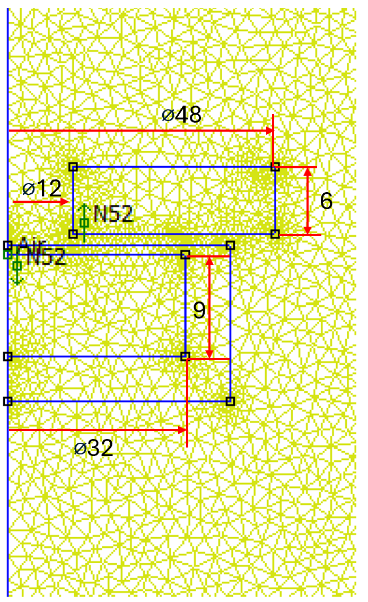
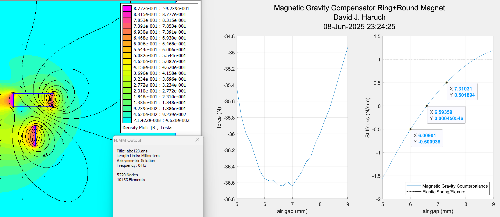
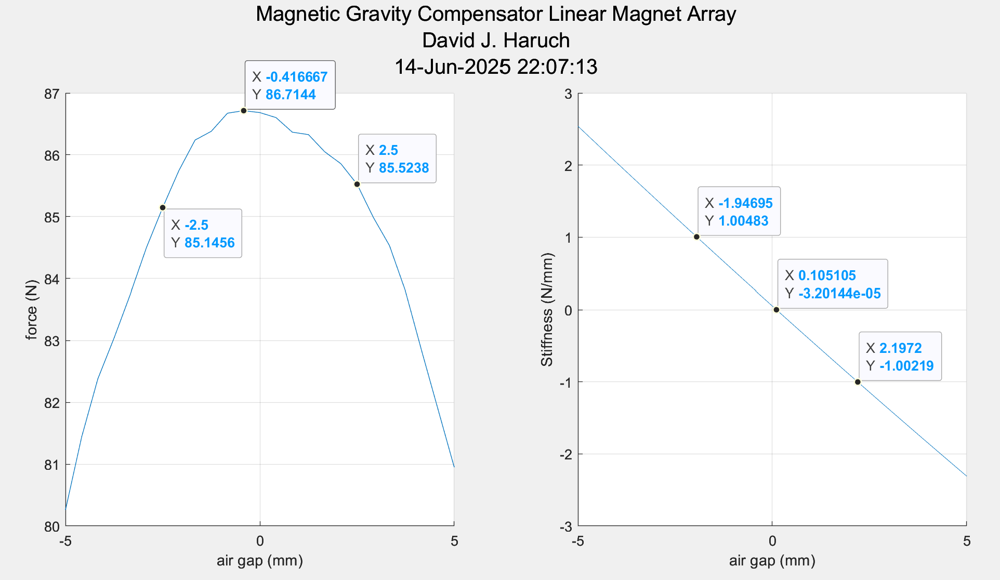
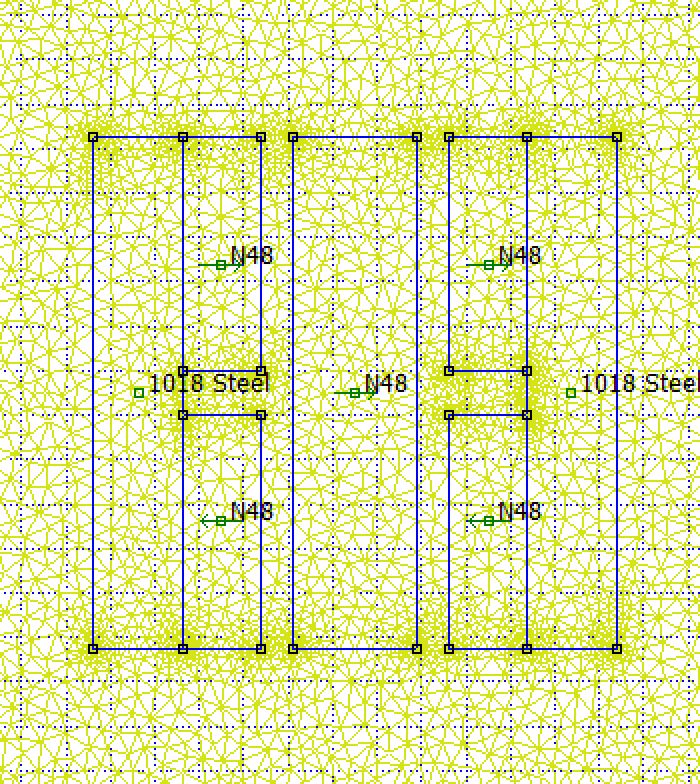
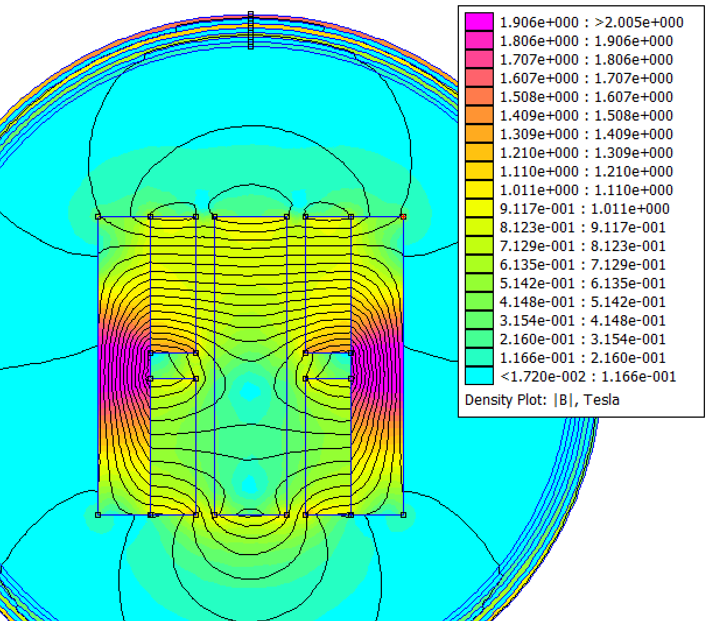
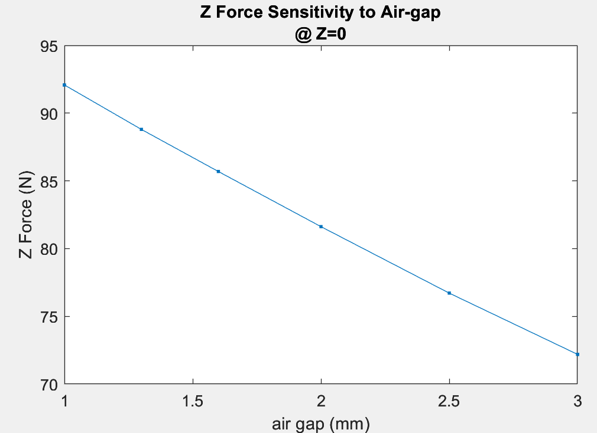

Examples of Magnetic Gravity Compensator Designs & Typical Performance
Updated 06-14-2025
Many motion systems have a Z axis and large mass relative to the actuator. At standstill, the Z actuator must support the load of gravity. This leads to increased power consumption and therefore heat that will cause structural deformation. Selecting a larger Z motor is often not desirable as the extra mass degrades performance and adds cost.
What is needed is a device that can produce a force equal and opposite to gravity that has as close to zero stiffness (dF/dz) as possible, to minimize force that the Z actuator must overcome when away from neutral position.
Some possible ways to counterbalance against gravity:
- Weight on Pulley
- Vacuum Bellows (Roeders Milling Machines)
- Air cylinder
- Spring/Flexure
- Magnetic Attraction/Repulsion
Gravity compensators using magnets will be discussed because they have good properties for use in semiconductor manufacturing. They are non-contact (no particles, infinite life) and enable high performance. One downside is such compensators can be large and expensive if a heavy load must be supported (>20kg)
Example Publsihed Gravity Compensators, Patents, etc..
Mikroniek nr2 2024 (ring type design)
Canon Patent US8804099 (2014)
(linear type design)
Ring/Round Magnet Axisymetric Design
One feasible topology is a ring magnet above a round magnet.
DSPE has a good video explaining the concept (audio is Dutch, slides are English?).
I wrote a 2D axisymetric script in FEMM for analysis of such a gravity compensator with N52 magnets and 48mm OD. FEM calculations show quasi-zero stiffness region (less than 0.5N/mm) can be achieved over range of 1.3mm while supporting ~3.7kg. The overall force change over 4mm is less than 2N.
 Linear/Square Magnet Design
A second feasible topology is a linear type design using a few rectangle shaped magnets.
The performance is comparable to the ring type design. The variation in Z force over 5mm range is ~1.6N while supporting >8kg.
  By looking at the pattern of flux in the back irons, mass-reduction/lightweighting cuts like I discussed in my VCM back iron optimziation page are likely feasible
The amount of force can be tuned by adjusting the air gap. 1mm change in air gap changes force 10.4N (11.3%). It is not a leap to think of a design with a flexure and LH/RH threaded lead-screw to make an easy tuning device to account for variations in magnetic properties and Z axis mass
Something worth checking with both designs is demagnetization and variation of force with temperature due to magnetic material properties changing. Select appropriate permanent magnet material based on the application for example SmCo or NdFeB
Thanks for reading--codes are available on my Github profile